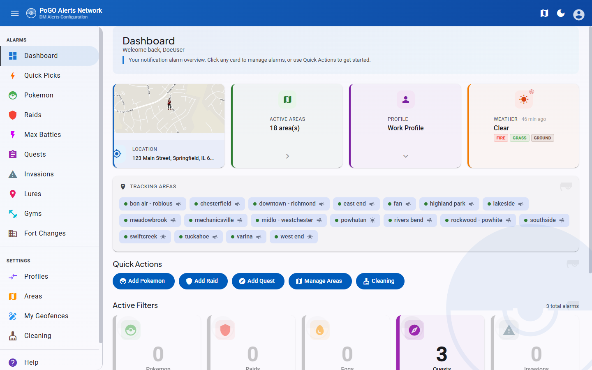
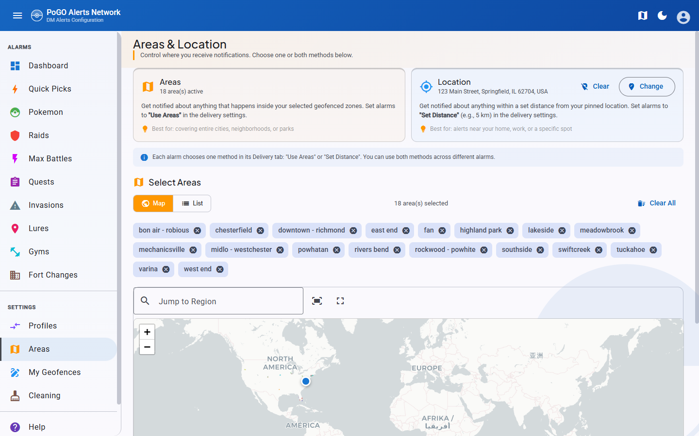
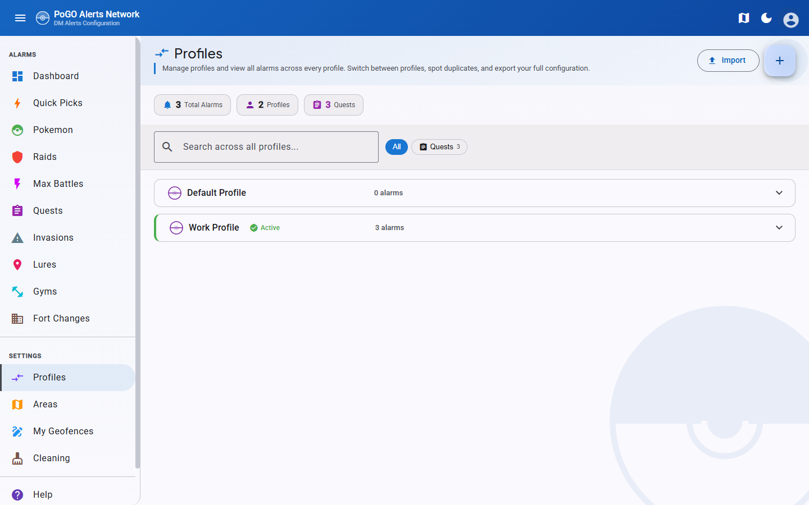

PoracleWeb.NET
Pokemon GO DM Alert Configuration
Angular 21
.NET 10
Material Design 3
MySQL
11 Languages
Available in 11 languages
🇬🇧
🇫🇷
🇩🇪
🇪🇸
🇳🇱
🇮🇹
🇵🇹
🇧🇷
🇵🇱
🇩🇰
🇸🇪
Features
Everything you need to manage Poracle notifications
⚡
Real-Time Alerts
Configure filters for Pokemon, Raids, Quests, Invasions, Lures, Nests, Gyms, Fort Changes, and Max Battles with granular IV/CP/PVP controls.
🌍
Multi-Language
Full UI translation in 11 languages. Browser auto-detection with instant runtime switching. Admin-controlled language availability.
🔐
Discord & Telegram Auth
Authenticate via Discord OAuth2 or Telegram Bot Login. Role-based access control with admin management.
📍
Custom Geofences
Draw polygon geofences on an interactive map. Submit for admin review to promote as public areas. Full GeoJSON import/export.
👤
Profile Management
Multiple alarm profiles per user with scheduled auto-switching. Duplicate, export, and import profiles with all alarms.
⚙️
Admin Dashboard
User management, webhook configuration, site settings, geofence review, and multi-server Poracle instance management with SSH restart.
See It In Action
Dark mode, Material Design 3, fully responsive

Dashboard with alarm overview and weather

Pokemon alarm cards with filter pills

Interactive area selection with Leaflet maps

Profile overview with cross-profile alarm view
Quick Start
1
Clone & configure
git clone https://github.com/PGAN-Dev/PoracleWeb.NET.git
Copy .env.example to .env and fill in your values
2
Create the database
CREATE DATABASE poracle_web CHARACTER SET utf8mb4 COLLATE utf8mb4_general_ci;
3
Build & run with Docker
docker build -t poracleweb.net:latest .
docker compose up -d
4
Open in browser
Navigate to http://localhost:8082 and sign in with Discord